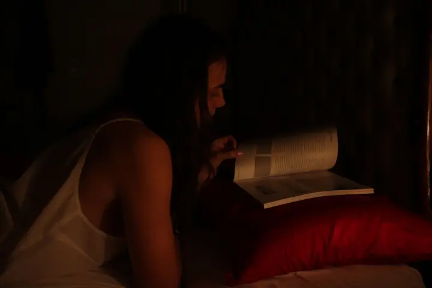
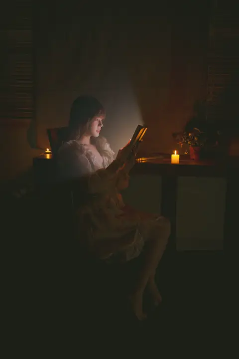
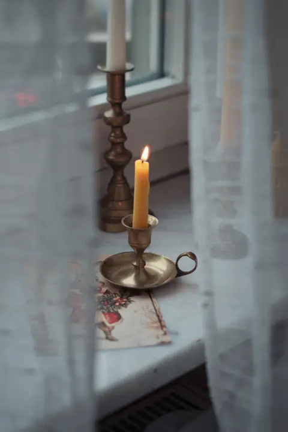
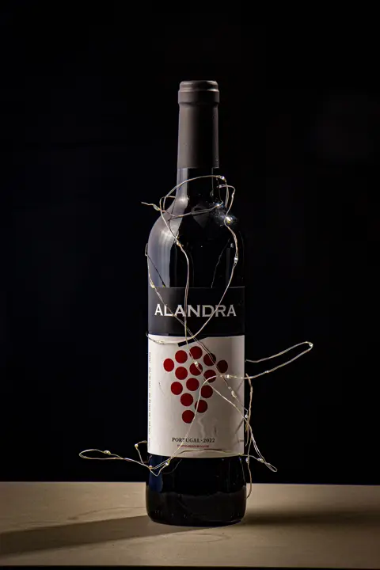
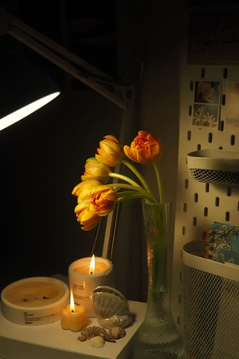

Cheap Stocking Fillers UK: Small Gifts That Aren’t Tat
Ad: As an Amazon Associate I earn from qualifying purchases. Links on this page are affiliate links, so I may earn a commission if you buy, at no extra cost to you. More info.
Small, low-cost stocking fillers that are fun or genuinely useful. Prices change often, so check the current price on Amazon before you buy.
1. The 1% Club quiz book
The quiz book from the hit ITV show is perfect for Boxing Day when everyone’s full and the telly’s rubbish. Great for families and quiz lovers.
View on Amazon UK
Lifestyle photo (not the product): Pexels
2. Cat book light and bookmark
A cute cat-shaped book light that doubles as a bookmark. Ideal for bookworms and cat lovers of any age.
View on Amazon UK
Lifestyle photo (not the product): Pexels
3. Rechargeable clip-on book light
A rechargeable clip-on light lets one person read without keeping the other awake. A small gift couples will thank you for.
View on Amazon UK4. Mini rechargeable keychain torches (2 pack)
Tiny rechargeable torches that live on a keyring and come in handy daily. Great for dog walkers, teenagers and dads.
View on Amazon UK5. Riddles To Do While You Poo On The Loo
Silly bathroom riddles guaranteed to get a laugh on Christmas morning. Best for adults with a cheeky sense of humour.
View on Amazon UK6. Cozy Friends colouring book
Relaxing, cute colouring pages are a calm screen-free hobby. Good for teens, students and stressed-out grown-ups.
View on Amazon UKLifestyle photo (not the product): Pexels
7. The Killer Isn't Alice puzzle book
An interactive whodunnit puzzle book that keeps someone busy for hours. Perfect for crime-drama fans.
View on Amazon UK
Lifestyle photo (not the product): Pexels
8. Flameless LED tea lights (12 pack)
Flameless tea lights give a candlelit look with no fire risk. Handy for anyone in a rented flat or student halls.
View on Amazon UK
Lifestyle photo (not the product): Pexels
9. Wine bottle cork lights
Cork lights turn an empty wine bottle into a pretty lamp. A fun little gift for crafty friends or wine lovers.
View on Amazon UK
Lifestyle photo (not the product): Pexels
10. Mini submersible LED lights
Waterproof mini LEDs for vases, jars and baths. A cheap way to add a bit of Christmas sparkle.
View on Amazon UK